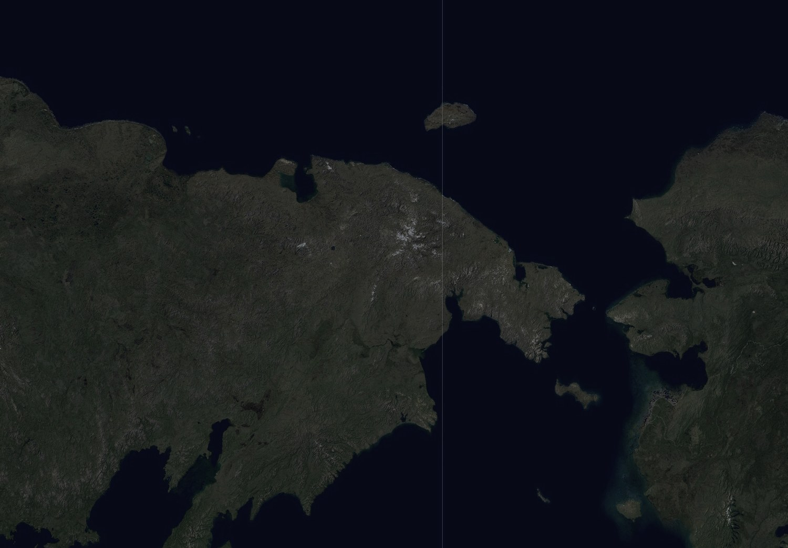
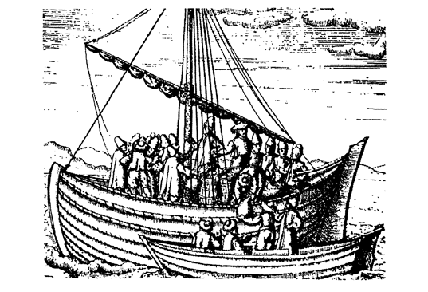
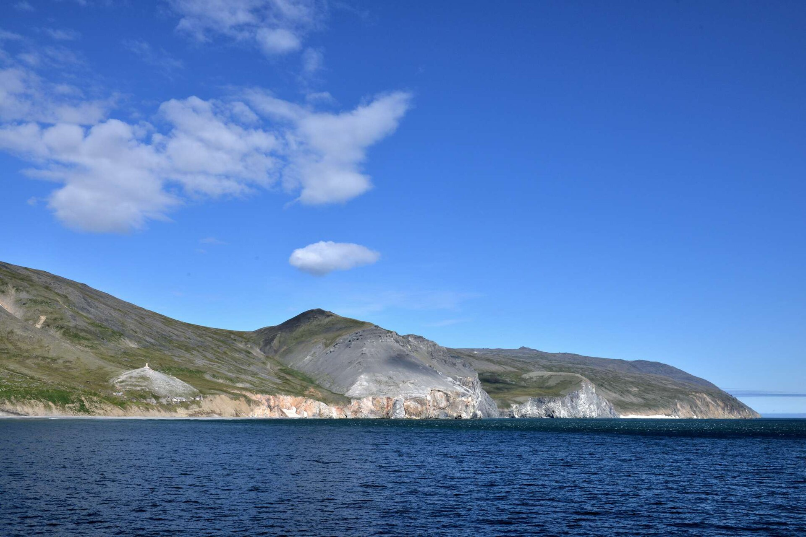
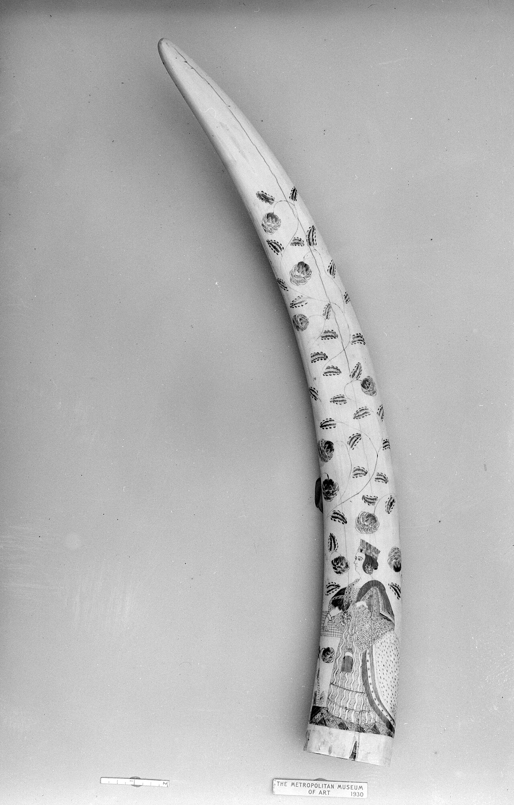
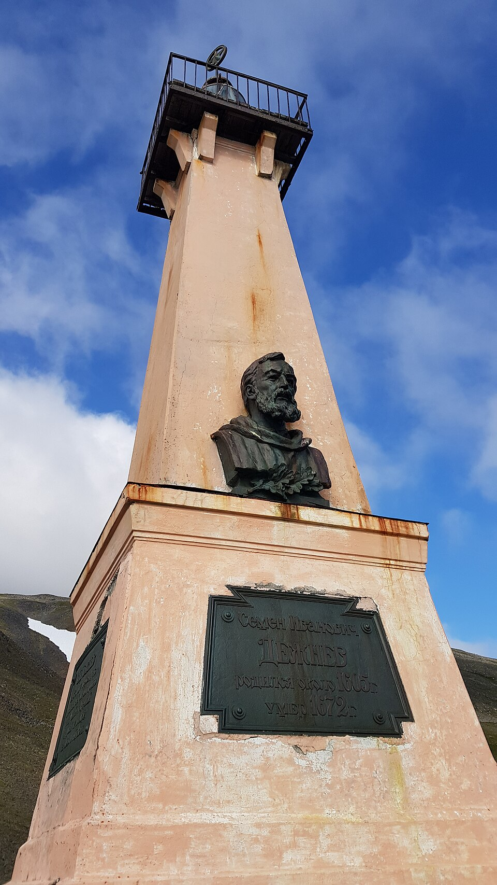

Machine translation of the Russian original, checked against it. The video and the audio guide in this version are in Russian. The Russian original is here.
The whole voyage in forty-seven seconds: how to discover the edge of the world and not notice it. The footage follows an authentic sheet of Remezov's 1701 atlas, and the voice is the same as in the audio guide. Below on this page is the same story, but in detail and with a map.
In the summer of 1648 seven koches — wooden trading vessels of Pomor build — left the mouth of the Kolyma. Ninety men were going to look for the Pogycha river, rich in "fish tooth" — walrus ivory, which was worth more than sable. They were not looking for any strait: no one in the world then knew that Asia and America were separate. Tap a point — and the route moves on.

Half a century after the voyage, the Tobolsk cartographer Semyon Remezov compiled the "Drawing Book of Siberia" — the first Russian geographical atlas. Before you is an authentic sheet at a resolution of 5100 × 7201 pixels: you can zoom in to a single stroke of the pen. This is exactly the picture of the world in which Dezhnev's discovery had no place.
There are deliberately no golden hint dots here. The labels are written in seventeenth-century cursive, and we will not pass our guesses off as attribution. Look freely — below it says what is worth noticing.
There is no graticule on the drawing. Distances here are measured not in degrees but in days of travel: "seven days' travel to that fort". The map answers not the question "where is this" but the question "how do I get there" — and that is what sets it apart from everything we are used to.
Zoom into any river system — it branches down to the smallest tributaries. And the sea coast is often given as a single line. The reason is simple: people travelled along the rivers, carried furs and yasak along them, and knew them. The sea was an edge, not a road.
There are no conventional symbols yet — there is a picture. An ostrog is shown as a tower with a palisade, a monastery as a little church. The map is not read by a legend; it is looked at.
The explanations are written not in the margins but inside the drawing itself, between rivers and mountains. Remezov did not separate the map from the story — for him they were one thing.
The report was put into a box in the Yakutsk voivode's chancellery, and it lay there longer than Dezhnev lived after the voyage. Eighty-eight years is longer than the average human life of that time: a whole generation was born, grew up and died that could have known about the strait from school. How exactly the paper left the box — below, in the "Story" section.
The expedition was after walrus ivory: "fish tooth" was worth more than sable, and rumours of the Pogycha river, where walrus haul-outs lay, stirred up the Kolyma. The geographical discovery turned out to be a side effect of a trading trip. Even in his reports Dezhnev does not write "I discovered the strait" — he describes where the hunting grounds are.
A koch is a Pomor vessel whose boards were sewn with juniper roots or with bast. The hull was made egg-shaped: squeezed by the ice, it did not break but was pushed upwards. In such vessels ninety men put out to a sea they knew nothing about.

After the shipwreck the remains of the party reached the Anadyr. Dezhnev spent twelve years on that river, built the Anadyr ostrog, and in 1652 found a huge walrus haul-out — the very wealth they had come for. He did not return home — he stayed to live in the place he had been carried to.
Having reached Moscow in 1664, Dezhnev submitted a petition: he had not been paid his salary for nineteen years. Not a month and not a year — for all nineteen he served, went to sea, built the ostrog and lived on whatever he could obtain himself. A man who had passed the edge of the continent came to the capital not for glory but for the pay he had never received.
On the twentieth of June 1648 seven koches left the mouth of the Kolyma for the Arctic Sea. Two men led the expedition: the cossack Semyon Ivanovich Dezhnev, a serving man with twenty years' experience in Siberia, and the trader Fedot Alekseyev Popov. Ninety men. The goal was the Pogycha river, said to have walrus haul-outs at its mouth, and walrus ivory — "fish tooth" — was worth more in Moscow than sable.
One must understand where they were going. East of the Kolyma there was nothing for a Russian of the seventeenth century — no maps, no tales, no certainty that the sea there was passable at all. Attempts had been made before, and they all ended the same way: ice, turn back, return. No one in the world then knew whether Asia and America were joined or separated. The question was open, and no one intended to settle it that June.
The sea devoured the expedition piece by piece. Not all the koches made it to September: some were smashed, others vanished. And on the twentieth of September 1648 the survivors rounded what Dezhnev in his report called the Great Stone Nose — a rocky cape beyond which the coast turned south. One thousand four hundred kilometres from the mouth of the Kolyma. This was the easternmost point of Asia, and they had passed between Eurasia and North America without suspecting what they were doing.

Then came the shipwreck. Dezhnev's koch was thrown ashore south of the mouth of the Anadyr, and the remains of the party set off on foot — in winter, without supplies, across land they did not know. Not all of them made it. Those who did had to settle in: Dezhnev built an ostrog on the Anadyr and stayed there for twelve years. In 1652 he found that very walrus haul-out — the goal of the voyage, obtained four years after it began.
In 1664 he brought 289 poods of walrus ivory to Moscow — about four and a half tonnes. The treasury sold it for 17,340 roubles, and Dezhnev received his share: five hundred roubles in sables, a huge sum for those times. It was then that he submitted a petition about the salary he had not been paid for nineteen years. The Great Stone Nose was not mentioned in the papers: from the prikaz's point of view it was not a merit but a detail of the route.

And his reports stayed in Yakutsk. They lay in the archive of the voivode's chancellery for almost ninety years, until in 1736 the historian Gerhard Friedrich Müller found them while sorting Siberian papers to describe the region. Only then did it become clear that a cossack had sailed the strait eighty years before Vitus Bering, who did it in 1728 with maps, instruments and a state commission. The name on the map stayed with Bering — it was already there. Dezhnev got a cape, that very Great Stone Nose, and only in 1898.

Here it is worth pausing on one thing that is usually not mentioned. The discovery did not happen not because it was concealed, and not because someone was against it. It did not happen because nobody understood what had happened. Dezhnev described what he saw, honestly and in detail. It is just that in 1648 there was no question to which his report was the answer. The question appeared later — and then the answer had to be sought anew.
The man in one paragraph. Semyon Ivanovich Dezhnev (c. 1605 — early 1673). A native of the Russian North, from Pinega or from Veliky Ustyug. He served in Tobolsk, Yeniseysk and Yakutsk; collected yasak, went on long expeditions, was wounded more than once. No image of Dezhnev from his lifetime exists — every portrait you have seen was invented by artists later. We do not show them here.
The answers are assembled from Dezhnev's documented reports and petitions and from the work of historians. This is a reconstruction of a voice, not a record of his actual speech.
A name appears on a map not when a man passes a place, but when scholarship learns of it. By the time Dezhnev's reports were read, Bering's expedition had already been described, published and drawn onto the maps of Europe. It was too late to rename, and there was no reason to — the geographical community works with what has been printed. Dezhnev got a cape, and that is fairer than it seems: it was the cape he actually saw, while the strait, as a phenomenon, he never saw at all.
A koch is a Pomor vessel with an egg-shaped hull whose boards were sewn with bast rather than nailed together. A hull of that shape, squeezed by ice, does not break but is forced upwards. The flexibility of the sewing gave what rigid fastening did not: the vessel gave on the waves and in the ice. European ships of the time did not sail into such ice — not because they were worse, but because they were built for a different sea.
Dezhnev was not writing a scholarly work but an official paper — a report to the prikaz: where he had been, what he had taken, how many men he had lost, how much yasak he had collected. That is why his discovery drowned: the genre of the report has no room for the phrase "here Eurasia ends". Müller, reading those papers ninety years later, saw geography in them because he was looking for geography. The same text, read differently, gave a different result.
Four and a half tonnes of tusk sold for 17,340 roubles is a figure that says little today. For comparison: the annual salary of an ordinary cossack in Siberia was a few roubles. That is exactly why men went for "fish tooth" to a place from which they might not return — the economics of the voyage were arranged the way the gold rush would later be arranged.
The year sixteen hundred and forty-eight. In Europe the Peace of Westphalia is ending the Thirty Years' War — the continent is emerging from the worst slaughter of its time. In England a civil war is under way, and months remain until the king is executed. Dutch ships sail to the East Indies, Spanish ships to America, and both powers believe the world has already been divided up and described.
In that same year ninety men in boats sewn with thread put out into a sea that appears on no map of the world, and pass between Eurasia and North America. No one learns of it — not in London, not in Amsterdam, not even in Moscow. The difference is not in courage — there were brave men everywhere. The difference is that European voyages were fitted out by companies and crowns that demanded reports and publication, while this voyage was fitted out by traders at their own expense, and the only place to report to was the prikaz hut.
Hence the simple conclusion for which this page is worth keeping in the museum: being first is not only about arriving first. It is also about being able to tell the story. Dezhnev did the first and did not do the second, and for eighty years history went on as if he had never been.
On the twentieth of June 1648 seven koches and ninety men left the Kolyma. Five decisions of the voyage are yours. After each one you see what became of the fleet, and it is written what Dezhnev actually did. There are no right answers here: he did not have them either.
The historical options, dates and fates of the koches follow Dezhnev's report and the materials of the Russian Geographical Society; the total price of the voyage is stated plainly in the report: "in all, 64 men perished". How those losses are distributed across the stages, and what would have happened in the options that never were, is our model, not a document.
The labels and dots will disappear from the map. You will be told a place — you have to tap it on the map: it will rise onto the screen by itself, and after the finish it will bring you back here. Four points, sixty seconds, ten points for a hit.
They went for walrus tusk, which was worth more than sable, to the Pogycha river. They sailed the strait in passing and never understood that they had.
The reports lay in the Yakutsk archive from 1648 until 1736 — the historian Müller found them. By that time Bering had already sailed the strait.
True. The boards were sewn with bast, and the egg-shaped hull, when squeezed by ice, was forced upwards instead of breaking.
There are no images from his lifetime. Every "portrait of Dezhnev" was invented by artists later — which is why there are none on this page.
Dezhnev. He died in early 1673, and his reports were read in 1736 — sixty-three years later.
Every day of the year has its own occasion — the departure of an expedition, a discovery, the founding of an ostrog. The calendar is being filled in: empty months are waiting for their dates.